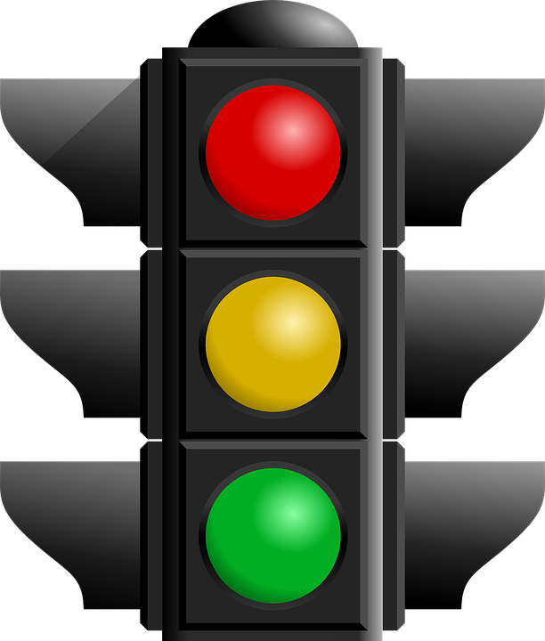

Your BAC: 0%

Effects at this level:
Disclaimer: This feature uses averaged statistics (like weight, alcohol absorbtion and elimination rates) to calculate BAC. The feature makes not claims regarding accuracy, it is not intended to replace solid judgement, medicial advice, care, or counsel and should be considered a NOVELTY FEATURE intened to demotrate data driven decision making. Please drink responsibly and consider other modes of transportation: Uber, Lyft, or with a friend.